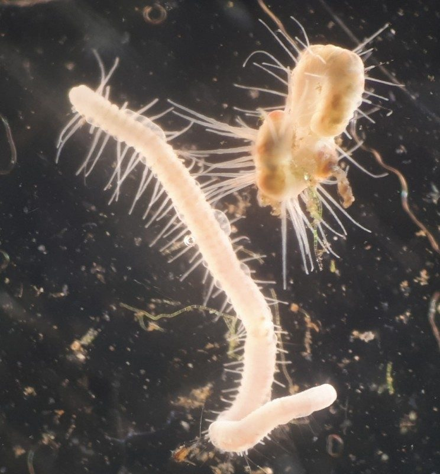

ब्रैंकियोड्रिलस वर्मBranchiodrilus Worm
Branchiodrilus hortensis · Naididae · SFL-0021

- Scientific name वैज्ञानिक नाम
- Branchiodrilus hortensis (Stephenson, 1910)
- Family कुल
- Naididae
- Hindi हिंदी
- ब्रैंकियोड्रिलस वर्म
- Local names स्थानीय नाम
- branchiodrilus worm
- Status here यहाँ की स्थिति
- native
- Movement आवागमन
- Resident, here all year
- Known from कहाँ दर्ज
- Others have published records from the wider Awadh–Purvanchal plain, none yet from Basti–Ayodhya अवध–पूर्वांचल से दूसरों के प्रकाशित अभिलेख, बस्ती–अयोध्या से अभी नहीं
- IUCN IUCN
- not evaluated
- Review समीक्षा
- not yet reviewed
When to look कब देखें
Present all year. साल भर मौजूद।
Tell it apart from इनसे अलग पहचानें
ब्रैंकियोड्रिलस वर्म / Branchiodrilus Worm
Branchiodrilus hortensis (Stephenson, 1910) — Naididae
ब्रैंकियोड्रिलस वर्म — भारतीय उपमहाद्वीप के ताजे पानी के तालों, पोखरों और पुराने गड्ढों के कीचड़ में पाया जाने वाला एक विशिष्ट जलीय कृमि है। इसके शरीर के दोनों किनारों पर आगे से पीछे तक उंगलियों जैसे लंबे, पतले गलफड़े होते हैं जो पानी में लगातार हिलते रहते हैं। यह कम ऑक्सीजन वाले कीचड़ में आसानी से सांस ले लेता है और तलहटी में मौजूद सड़े-गले पौधों के कचरे को खाकर पानी को साफ रखता है।
Quick Identification त्वरित पहचान
| Feature | Description |
|---|---|
| Lateral gills | Conspicuous finger-like, ciliated lateral gills extending along body segments |
| Gill length | Longest anterior gills reach several times the body diameter |
| Setae within gills | Hair setae enclosed within the substance of the lateral respiratory gills |
| Anterior pigment | Brown transverse pigment bands across dorsal surface of anterior segments |
| Prostomium | Bluntly conical, well-marked; eyes absent |
| Tube habit | Inhabits delicate, muddy tubes constructed from fine silt and mucus |
Field tip: Gently disturb aquatic vegetation and surface silt from undisturbed pond shallows. When transferred to clean water, this worm is immediately recognisable by the numerous paired, ciliated respiratory filaments projecting along its body flanks like a tiny aquatic centipede.
हिंदी:
इसके शरीर के दोनों किनारों पर पतले-पतले गलफड़े पंखों की तरह निकले रहते हैं।
यह कीचड़ की पतली नली बनाकर रहता है और केवल शरीर का कुछ हिस्सा बाहर निकालता है।
अन्य जलीय केंचुओं से इसे इसके शरीर पर लगे लंबे रेशेदार गलफड़ों द्वारा आसानी से पहचाना जा सकता है।
Morphology आकारिकी
Measurements as given by Stephenson (1923):
| Measurement | Range | Source |
|---|---|---|
| Length | 16–25 mm | Stephenson (1923) |
Branchiodrilus hortensis is an elongated, cylindrical aquatic naidid with a well-marked, bluntly conical prostomium that lacks eyes (Stephenson 1923). The anterior body is pigmented irregularly on the dorsal surface of the first few segments, continuing as distinct transverse bands back along the anterior segments, where the dark pigmentation gradually fades (Stephenson 1923).
The body surface and lateral gills are covered in fine cilia. Gills begin on anterior segments and diminish gradually in length towards the posterior end, ceasing just in front of the terminal pygidium (Stephenson 1923). The dorsal setae are completely enclosed within the tissue of the lateral gills, with only the distal tips protruding. Ventral setal bundles occur on all segments from the second segment onward, containing sigmoid crotchets with unequal bifid prongs (Stephenson 1923).
हिंदी:
इसकी लंबाई सोलह से पच्चीस मिलीमीटर होती है और शरीर अनेक खंडों में बंटा होता है।
इसके शुरुआती खंडों पर भूरी आड़ी धारियां पाई जाती हैं।
इसके पीठ के बाल गलफड़ों के भीतर धंसे रहते हैं और केवल सिरे बाहर निकले होते हैं।
Behaviour & Ecology व्यवहार और पारिस्थितिकी
A sedentary benthic aquatic annelid that inhabits the interface between soft organic sediment and standing water. It builds fragile, vertical tubes of agglutinated silt and fine detritus bound by mucous secretions. The worm anchors its lower body in the tube while extending its anterior and mid-body segments into the water, rhythmically undulating its ciliated lateral gills to generate feeding and respiratory currents.
The species is remarkably tolerant of low dissolved oxygen concentrations in benthic microhabitats. The high surface-area-to-volume ratio of its ciliated gills enables efficient cutaneous respiration even under hypoxic conditions near decomposing leaf mats. When removed from its tube, it crawls sluggishly along the substrate and swims with slow, undulating flexions.
हिंदी:
यह तालाब के तल में कीचड़ और सड़ती पत्तियों के बीच अपनी पतली नली बनाकर रहता है।
गलफड़ों को लगातार हिलाकर यह ताजे पानी का प्रवाह अपने शरीर के पास बनाए रखता है।
ऑक्सीजन की भारी कमी वाले गंदे पानी में भी यह आसानी से जीवित रह सकता है।
Life Cycle / Phenology जीवन चक्र
Present throughout all seasons in perennial wetlands, jheels, and sluggish ditches of the Gangetic plain. Asexual reproduction through transverse paratomy is the primary reproductive strategy during the monsoon and post-monsoon months. A fission zone develops in mid-body, producing chains of two individuals before complete detachment.
Sexual reproduction is seasonal, observed primarily during the cooler post-monsoon period. Mature hermaphroditic individuals develop temporary reproductive structures, copulate reciprocally, and secrete protective cocoons deposited directly into benthic sediment. Cocoons remain dormant in mud during dry summer spells.
हिंदी:
यह पूरे साल तालाबों और पोखरों में मौजूद रहता है और सक्रिय बना रहता है।
बारिश के बाद यह शरीर के बीच से विभाजित होकर तेजी से अपनी संख्या बढ़ाता है।
बदलते मौसम में यह सुरक्षात्मक कोकून में अंडे देता है जो सूखे में भी जीवित रहते हैं।
Diet and Feeding Behaviour आहार
A non-selective deposit feeder that feeds directly on bottom silt and decaying organic matter:
- Fine organic detritus and decaying aquatic macrophyte fragments
- Epipelic diatoms, micro-algae, and unicellular protists settled on sediment surfaces
- Benthic bacterial biofilms thriving on decomposed plant matter
By consuming organic debris and passing fine minerals through its gut, it facilitates the aerobic decomposition of wetland sediment and accelerates nutrient cycling in rural water bodies.
हिंदी:
इसका मुख्य आहार तालाब की तलहटी में जमा सड़ा-गला कचरा और सूक्ष्म काई है।
यह मिट्टी को छानकर उसमें से जैविक पोषक तत्वों को ग्रहण करता है।
Predators / Natural Enemies शत्रु
Serves as an important prey organism for benthic predators across Gangetic wetland ecosystems:
- Small bottom-dwelling fishes including loaches, juvenile snakeheads, and barbs
- Predaceous aquatic beetles and dragonfly naiads that forage within benthic silt
- Aquatic hemipterans and probing wading birds along muddy wetland margins
हिंदी:
कीचड़ में भोजन तलाशने वाली छोटी मछलियां और बगुले इसे बहुत पसंद करते हैं।
पानी के मांसाहारी कीड़े और उनके लार्वा भी इसका शिकार करते हैं।
Agricultural / Human Relevance कृषि प्रासंगिकता
Provides vital ecological services by aerating benthic sediment in community irrigation ponds and floodwater drainage channels. Its active bioturbation prevents stagnant bottom mud from turning sour and promotes beneficial microbial decomposition of crop residues.
It causes no harm to agricultural crops, irrigation infrastructure, or livestock. In local fisheries and aquaculture practices, abundant naidid worms provide an essential natural live food source for juvenile carp and fry.
हिंदी:
यह तालाबों के तल में कीचड़ को पलटकर पानी को साफ और मिट्टी को उपजाऊ बनाता है।
यह फसलों को कोई नुकसान नहीं पहुंचाता और मछली के बच्चों के लिए उत्तम प्राकृतिक आहार है।
Expected Locally स्थानीय रूप से अपेक्षित
Not a field record. Written from published accounts for eastern Uttar Pradesh. No confirmed local sighting yet — if you have seen it, that is what the atlas needs.
अभी तक स्थानीय पुष्टि नहीं। यह विवरण प्रकाशित स्रोतों से है, किसी अवलोकन से नहीं।
Occurs in organic-rich mud of perennial village tanks, oxbow marshes, and sluggish irrigation drains across eastern Uttar Pradesh. The worms dwell in the topmost centimetre of soft silt among decaying water lily leaves and submerged plant debris.
GBIF holds published records from the wider Awadh–Purvanchal plain, none yet from Basti–Ayodhya.
A confirmed first record from the district requires a clear photograph under magnification showing the paired lateral gills along the body, with date and coordinates, submitted through the About page.
हिंदी:
पूर्वी उत्तर प्रदेश के पुराने ताल-तलैयों और पोखरों के कीचड़ में इसके मिलने की प्रबल संभावना है।
आवर्धक लेंस से इसके दोनों किनारों पर स्थित गलफड़ों की तस्वीर लेकर पुष्टि की जा सकती है।
Distribution वितरण
Global range: Widespread across the Oriental region, particularly throughout the Indian subcontinent and adjacent Southeast Asia (Stephenson 1923).
In India: Recorded from northern and central India, including documented populations from Punjab, Uttar Pradesh, and West Bengal (Stephenson 1923).
In Uttar Pradesh: Documented from historical aquatic surveys in eastern Uttar Pradesh, including literature records from Varanasi.
In Basti district / eastern UP: Expected as a widespread resident micro-annelid in undisturbed muddy margins of rural ponds and wetlands.
हिंदी:
यह भारतीय उपमहाद्वीप और दक्षिण-पूर्व एशिया के मीठे पानी के आवासों में पाया जाता है।
उत्तर प्रदेश में यह वाराणसी और गंगा के मैदानी इलाकों के तालों से दर्ज है।
Research Questions शोध प्रश्न
- What range of sediment organic matter concentration supports the highest abundance of this species? / तलहटी की मिट्टी में कार्बनिक पदार्थों की कितनी मात्रा इसके विकास के लिए सर्वोत्तम है?
- How do lateral gill length and surface area vary between well-oxygenated tanks and hypoxic stagnant ditches? / साफ पानी वाले तालाबों और गंदे नालों में रहने वाले जीवों के गलफड़ों में क्या अंतर होता है?
- How long do cocoons survive desiccation in dried-up seasonal oxbow pools during summer?
- Can students use the presence of lateral gills to distinguish this genus from other aquatic worms in class projects? / क्या छात्र साधारण आवर्धक लेंस से गलफड़ों को देखकर इस कृमि की पहचान करना सीख सकते हैं?
- Does heavy siltation from road construction runoff affect tube building and survival of local populations?
हिंदी:
क्या स्थानीय छात्र इस अनोखे गलफड़ेदार कृमि को पहचानकर जल स्रोतों का अध्ययन कर सकते हैं?
गर्मी में ताल सूख जाने पर इसके अंडों के सुरक्षित रहने की क्षमता पर शोध की आवश्यकता है।
Similar Species मिलती-जुलती प्रजातियाँ
| Species | How to tell apart | हिंदी |
|---|---|---|
| Finger-gilled Pond Worm (Dero digitata) | Gills restricted to a specialized cup-like posterior branchial fossa; body flanks completely lack lateral gills | फिंगर-गिल्ड पॉन्ड वर्म |
| Bristled Pond Worm (Nais barbata) | Lacks respiratory gills along body and tail; smaller body; eye-spots present on prostomium | ब्रिसल्ड पॉन्ड वर्म |
| Indian Common Earthworm (Metaphire posthuma) | Terrestrial earthworm; vastly larger, thick muscular body lacking external gills or aquatic swimming adaptations | केंचुआ |
Field rule: A slender aquatic worm bearing numerous paired, finger-like lateral respiratory gills extending along its body flanks is Branchiodrilus hortensis.
हिंदी:
Finger-gilled Pond Worm के गलफड़े केवल पूंछ पर एक प्याले जैसी संरचना में होते हैं।
Bristled Pond Worm के शरीर पर कोई गलफड़ा नहीं होता और Indian Common Earthworm जमीन पर रहने वाला बड़ा केंचुआ है।
Taxonomy & Classification वर्गीकरण
Original description. Described by John Stephenson in 1910 as Lahoria hortensis in Records of the Indian Museum, 5(1), pp. 59–66; type locality: Shalimar Gardens, Lahore (now in Pakistan). Later transferred to Branchiodrilus Michaelsen, 1900.
Subspecies. Monotypic — no subspecies are currently recognised.
Family and order placement. Belongs to the family Naididae, subclass Oligochaeta, and order Tubificida.
Phylogenetic notes. Branchiodrilus is morphologically unique among freshwater naidids in having true lateral branchial processes containing loops of the blood-vascular system and enclosing the dorsal hair setae.
IUCN status rationale. Not evaluated (NE) on the global IUCN Red List of Threatened Species; widespread and ecologically stable across South Asian wetlands.
हिंदी:
इसे 1910 में जॉन स्टीफेंसन द्वारा वर्णित किया गया था।
यह नैडिडी परिवार का सदस्य है और अपने शरीर पर स्थित अनोखे गलफड़ों के कारण पहचाना जाता है।
Photo Gallery फोटो गैलरी
No photos yet — add field photos to media/species/branchiodrilus_worm/ and run node scripts/sync_photos.js.
Photos needed आवश्यक फोटो
- [ ] Live worm showing lateral gill filaments under magnification (गलफड़ों की स्पष्ट सूक्ष्म तस्वीर)
- [ ] Individual extending from sediment tube in water dish (कीचड़ की नली से बाहर निकले कृमि की तस्वीर)
References संदर्भ
- Stephenson, J. (1910). Studies on the aquatic Oligochaeta of the Punjab. I. On Lahoria hortensis, a new naid with normal gills and dorsal setae, and with an irregular distribution of the vascular system. Records of the Indian Museum, 5(1), pp. 59–66.
- Stephenson, J. (1923). The Fauna of British India, including Ceylon and Burma. Oligochaeta. London: Taylor and Francis, pp. 77–78.
- GBIF Occurrence Data — Branchiodrilus hortensis, India (2025).
Source file: species/fauna/soil_fauna/branchiodrilus_worm.md